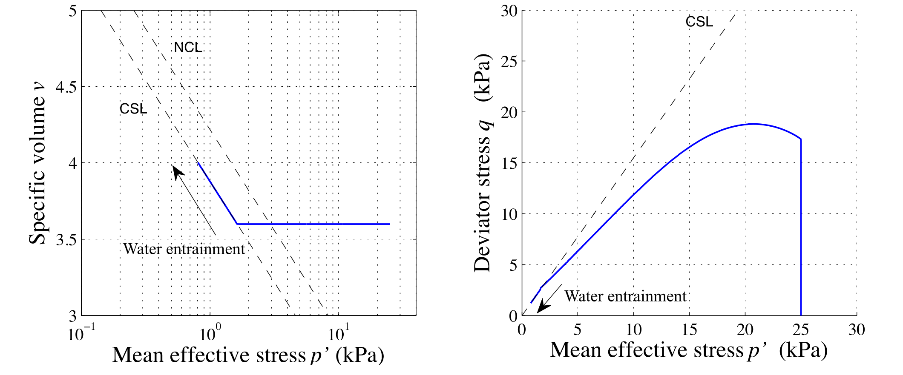
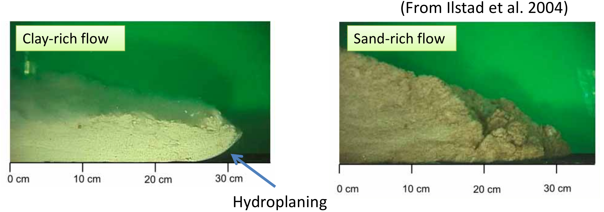

Multiscale modeling of natural hazards
MPM, LBM-DEM and ML
Krishna Kumar, krishnak@utexas.edu
Rei Hosseini, Qiuyu (Amber) Wang, and Chihun Sung
University of Texas at Austin

Boase Seminar Series
CU Boulder, 29th Oct 2021
Geoelements Extremescale Computational Geomechanics
- Material Point Method
- Lattice-Boltzmann + Discrete Element Method
- Finite Element Method - Thermo-Hydro Mechanical Coupling
- Lattice Element Method

Scales of modeling

Oso landslide (2014)

Oso landslide (2014)
Mesh-based vs Mesh-free techniques

Material Point Method

Oso Landslide Topography
MPM model setup
MPM simulation of Oso landslide
Simulation of Oso with X-MPM
Yong Liang, Kenichi Soga, and Krishna Kumar
MPM Towards exascale simulations
What is Ray Tracing?

What is Ray Tracing?
Two-phase MPM rendering
In-situ visualization
MPM Oso landslide rendering
In-situ visualization of Oso with MPM and Galaxy
Submarine run-out
Credit: Amanda Murphy (2016)
Mechanism of submarine runout
Mechanism of submarine landslides
Modeling Test at 1g Condition
- Material type influences the mode of the flow.
- Target: Clay‐rich flow (Less diffusive, Hydroplaning).
LBM - DEM simulation of granular collapse in a fluid
aspect ratio 'a' of 6
Discrete Element Method
- Particle level interaction based on Newton's equation of motion
- The contact force is computed as:
- The Newton's equation of motion
$F_n=\left\{ \begin{matrix} \text{ }0\text{ },\text{ }{{\delta }_{n}}>0 \\
-{{k}_{n}}{{\delta }_{n}}-{{\gamma }_{n}}\frac{d{{\delta }_{n}}}{dt},\text{ }{{\delta }_{n}}<0 \\
\end{matrix} \right.$
$F_n =m \times a $
Fluid-grain systems
Lattice Boltzmann - MRT


\[f_{i}(x + dx, t +\Delta t) - f_{i}(x, t) = -S_{\alpha i}(
f_{i}(x, t) - f_{i} ^ {eq}(x, t))\]
- $S_{\alpha i}$ is the collisional matrix.
- Probability density of finding a particle : $f(x,\varepsilon, t) $, where, x is position, $\varepsilon$ is velocity, and t is time.

LBM-DEM fluid-solid coupling

$$\Delta t_{s}=\frac{\Delta t}{\mathit{n}_{s}} \qquad (\mathit{n}_{s}=[\Delta t/ \Delta t_{D}]+1) $$
- At every fluid iteration, $\mathit{n}_{s}$ sub-steps of DEM iterations are performed using the time step $\Delta t_{s}$.
- The hydrodynamic force is unchanged during the sub-cycling.
LBM - DEM a = 0.8 & 10,000 particles
- LBM Nodes = 50 Million : DEM grains = 10000 discs
- Run-time = 4 hours
- Speedup = 125x on a Pascal P100
Collapse in a fluid
Loose v dense: Runout distance

Collapse on slopes: loose v dense

Loose v dense: Initiation phase

Loose v dense: Initiation phase
Pore-pressure distribution along the failure plane during initiation.
Loose v dense: Runout phase
Loose v dense: Runout phase


Water entrainment front (~15d length) at a slope of 5*
Two-phase MPM Submarine landslide
Multiphase LBM
Shan-Chen Multiphase LBM


Multiphase LBM: Effect of varying the contact angle

(θ = 0°)

(θ = 180°)

(θ = 90°)
Multiphase LBM: Hysteresis in Hamburg sand

Multiphase LBM: Hysteresis

Microscale features
Multiphase LBM: Origin of Hysteresis
Micromechanics of unsaturated behavior
Multiphase LBM: Capillary structures
(θ = 90°)
Two-phase MPM Rainfall induced landslide
Deep learning
Physics-informed Graph Attention Networks
GAT simulator
Krishna Kumar
krishnak@utexas.edu
View the Geoelements website for more information and software tools